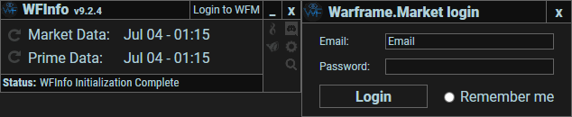

WFInfo gives you info on each reward
Current version 9.4.1
Usage
Download the latest release from above, WFinfo requires some aditional software to function properly:
Download Microsoft Visual C++ Redistributable 2019 from microsoft x64 and x86
For Windows 7 users: Enable TLS in registry and ensure you have installed .NET Framework Runtime 4.8
Run WFInfo.exe and wait for it to complete the initial load (databases + OCR data)
Go into warframe game and set the displaymode to Borderless Fullscreen and under interface turn Item Lables on.
Press the hotkey print screen on a fissure reward screen to show the display, or simply wait if you use the auto feature
When the program does not seem to function, do not spam the hotkey. This will create un-nessesary noise that will make debugging more difficult

Either as an overlay

Or as a window
How to use all the features
A quick rundown on all the things you can do inside WFInfo
TheKengineer made an excelent video showcasing the program and all of it's features here!
The default operating mode of WFInfo, activate with the hotkey (default: print screen) to scan the rewards at the end of a mission. A screenshot will be taken and the program will then read the reward names from there to display them.
Snap-it is the same functionality as the original but then ported over to work inside of an inventory! Hold the modification key (default: left CTRL) and then press the activation key (default: print screen) to start snap-it. Once started snap-it will change your cursor to a cross. Use this cross to drag a rectangle over the items you wish to scan (Item labels have to be on!) It will then take those items and apply the same processing to them, overlaying the values. Note: This does require borderless fullscreen as there is no other way to display over the game.
Log into your warframe.market account and connect WFinfo to it. This will grant you the ability to do two things: Manage the statues you're displaying on the website inside of WFinfo and the ability to post sell listings from within WFinfo. You can create sell listings through a couple of ways, by playing a mission and getting prime rewards scanned WFinfo will remember these items for a while. Then once you open up listing window (the treasure chest) It will bring those rewards back up to prompt you to create an sell listing. If the item got mismatched you can change it. If you want to list an item without running a mission you can start list-it.
List-it was originally a development tool used to quickly test the ability to create listings. But it was proven to be so handy it stayed. Spawn this menu by holding the modification key (default: tilde (`)), then pressing the activation key (default: print screen). A box will appear in which you can type any prime item part. It will then show the listing window where you can enter in a platinum value.
Settings
Configuring WFInfo so that it works correctly
Choose between the rewards showing up as an overlay on top of Warframe, having a new window spawn displaying the items on a second screen, or light mode, having no display show up but copy to clipboard.
Change how long the overlay stays displayed. Change to high contrast mode to improve readability and change whether or not items get highlighted.
Choose your preferred hotkey to activate WFInfo's reward detection. We recommend printscreen by default but you can use almost any keyboard key and even some mouse buttons!
Snap it efficiency, these are ducats per plat values. Anything under the min value will display as red and anything above the max value will display as green.
Auto will use the logs created by Warframe to detect when the reward screen is being displayed and run the program for you! Clipboard will copy the results into your clipboard allowing you to paste it into the chat for other players (Ctrl + V) Auto list will only work with auto enabled, it wil spawn a listing screen whenever it detected rewards and an end of mission If you ever run into a problem running WFinfo then you might be asked by the developers for a "Debug zip", this contains information useful to the developers for debugging what went wrong. This button will generate a series of zip files that can be sent over discord (All are under 8mb)
FAQ
-
Use at own risk? What are the risks?
WFinfo takes screenshots in order to process the data from Warframe. This means that
everything on your private monitor will be captured when the process is triggered.
These are saved in screenshots which remain locally on your machine for 12 hours.
Developers in the discord server might ask for a "Debug zip", these zips contain the screenshots taken.
Please make sure to only share this with developers, and always first check the contents!
If you wish to contact developers without discord please reach out to wfinfo@astolfo.nl -
Does this inject anything into Warframe? / Can this get me banned?
No, and no.
[DE] Aidan has confirmed it Here. -
What do I need for this program to run?
The recommended OS is Windows 10 with at least update 1903, this will include the correct .NET packages needed. Along side that it's best to run the game at 1080p or a higher resolution for best results. -
Why is it showing wrong rewards (for snap-it)?
The program is not perfect, however, there are steps you can take to improve the results. The most impactfull one is to increese resolution, either by increesing the game resolution or by increasing menu scaling. Another way to increasing performance is to change your theme to one with higher contrast, the default Vitruvian works well. -
Will this work with multiple monitors? / Will this work with 21:9?
Yes. - Why am I getting incorrect prices or the wrong number of popups? It's possible that the text recognition failed so make sure you've set the scaling correctly, if the issue persists please contact us on discord.
-
Is this safe to use?
This software is Open-Source so if you're concerned you can have a look at the code. -
How do I use warframe.market inside of warframe info?
In order to create a listing you first need to log into warframe.market. You need to have a dedicated password for this. If you use another login method (i.e. steam/xbox ect.) you will need to add an email to your account. You can do that under settings -> account Enabling "Remember me" will save an authentication token in your system registry. No email or passwords are saved!

By running a fissure mission wfinfo will store the results from the rewardscreen till you activate it by clicking the chest icon or having auto list triger. A dialog with the top 5 current sellers is listed, allowing you to make an informed decision on price. It is also possible to spawn this screen without running missions, helpful if you're listing from your inventory! Clicking the search icon or combining the search it keybinding with the hotkey will spawn a search box. Type in any prime item and hit enter. A similar dialog will spawn but with only the item you searched.
If you already had an active listing for the item it will be updated to the new price and one will be added to the quantity.
WFInfo change log
What was added in the latest releases?
9.4.1
Added snapit to equipment scaning
Fixed fullscreen reminder not spawning
9.4.0
Added korean language support
Added fullscreen reminder
9.3.1
Fixed status getting changed rapidly
Fixed high dpi not properly getting rewads
9.3.0
Warframe.market integration, allowing you to make listings
Allowed more settings to be tweaked in app.
9.2.2

It's now possible to enable reward highlighting. It will show which items have the best plat and ducat values as well as items not yet marked as owned.

General stability and preformance updates
9.2.0

Introducing multi snap-it! You can scan more than just a single item now, drag a rectangle over your whole inventory and see how much everything is worth.

We've introduced an automatic scaling detection. For the users who like to play around with their scaling. This will take any menu scaling and still perfectly read the rewards out from it!
9.1.0

Snap-it. Activate by pressing ctrl + hotkey and drag a rectangle over the item you want to see the price of. An overlay will spawn and show you what the item's value is!

Changes to how we update our program, boosting smaller and faster download speeds. Along side that general responsiveness has been increased, making the whole application more snappy.
9.0.0

Refactored entire code base to be now on C#, this will mean more people can contribute easier.

A whole lot has been added, just to list a few: Improved auto to work much more reliable, Improved detection overall. On 1080p we're receiving 99.9% accuracy and for 720p its 90%, massive improvements for UI, automatic error detection, improved user feedback, added option to copy results to clipboard, and more!
8.2.4

Relics and equipment expanded controls, filter relics and rewards to your hearts content

New auto detection, allowing WFINFO to display in non-endless missions even faster than before. As well as new auto-update feature!
8.1.0

WFInfo has a new overlay mode, now transparent and showing how popular an item is!

WFinfo has switched to a different style of collecting data, now getting bi-hourly updates on prices. This allows faster updating to incorrect prices without having to release an update
8.0.0

WFInfo now supports the new UI

Boasting the fastest times ever for WFinfo
7.3.0

WFInfo now supports windowed mode

Improved logging of screenshots allowing us to get down right to the detail on what goes wrong
7.2.0

A fix for 21:9 aspect ratios has been released

Improved logging of what happens, making it easier to debug
7.1.0

A new display type for relics, a separate window

The birth of this site!